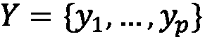
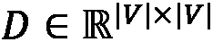
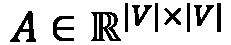
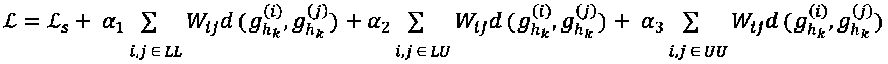

第四章:监督图学习
监督学习 ( SL )很可能代表了大多数实际的机器学习 ( ML )任务。由于越来越多的主动和有效的数据收集活动，现在处理带标签的数据集是非常普遍的。
对于图形数据也是如此，可以将标签分配给节点、社区甚至整个结构。那么，任务就是学习输入和标签(也称为目标或注释)之间的映射函数。
例如，给定一个表示社交网络的图，我们可能会被要求猜测哪个用户(节点)会关闭他们的帐户。我们可以通过在回顾数据上训练 graph ML 来学习这种预测功能，其中每个用户都根据他们是否在几个月后关闭他们的帐户而被标记为“忠实”或“退出者”。
在这一章中，我们将探讨 SL 的概念以及它如何应用于图形。因此，我们还将概述主要的监督图嵌入方法。将涵盖以下主题:
- 监督图嵌入路线图
- 基于特征的方法
- 浅层嵌入方法
- 图正则化方法
- 图形卷积神经网络(CNN)
技术要求
我们将在所有练习中使用装有 Python 3.8 的 Jupyter 笔记本。在下面的代码块中，您可以看到使用pip为本章安装的 Python 库的列表(例如，在命令行上运行pip install networkx==2.5):
Jupyter==1.0.0 networkx==2.5 matplotlib==3.2.2 node2vec==0.3.3 karateclub==1.0.19 scikit-learn==0.24.0 pandas==1.1.3 numpy==1.19.2 tensorflow==2.4.1 neural-structured-learning==1.3.1 stellargraph==1.2.1
在本书的其余部分，如果没有明确说明，我们将把nx称为import networkx as nx Python 命令的结果。
与本章相关的所有代码文件都可以在https://github . com/packt publishing/Graph-Machine-Learning/tree/main/chapter 04获得。
监督图嵌入路线图
在 SL 中，训练集由一系列有序对( x ， y )组成，其中 x 是一组输入特征(通常是在图上定义的信号)，而 y 是分配给它的输出标签。那么，ML 模型的目标是学习将每个 x 值映射到每个 y 值的函数。常见的监督任务包括预测大型社交网络中的用户属性或预测分子的属性，其中每个分子都是一个图。
然而，有时并不是所有的实例都有标签。在这种情况下，典型的数据集由一小组已标记的实例和一大组未标记的实例组成。对于这种情况，提出了semi-SL(SSL)，由此算法旨在利用可用标签信息所反映的标签依赖性信息，以便学习针对未标记样本的预测函数。
关于监督图 ML 技术，已经开发了许多算法。然而，正如不同的科学论文(https://arxiv.org/abs/2005.03675)先前所报道的，它们可以被分成宏组，例如基于特征的方法、浅嵌入方法、正则化方法和图形神经网络 ( GNNs )，如下图所示:
图 4.1-本书中描述的不同监督嵌入算法的层次结构
在接下来的章节中，你将学习每组算法背后的主要原理。我们还将尝试对该领域最著名的算法提供见解，因为这些算法可用于解决现实世界的问题。
基于特征的方法
对图应用 ML 的一个非常简单(然而强大)的方法是将编码函数视为一个简单的嵌入查找。在处理监督任务时，一种简单的方法是利用图形属性。在 第 1 章 、图入门中，我们已经了解了图(或图中的节点)是如何通过结构属性来描述的，每一个都“编码”了来自图本身的重要信息。
让我们暂时忘记 graph ML:在经典的监督 ML 中，任务是找到一个函数，将一个实例的一组(描述性)特征映射到一个特定的输出。这样的特征应该被精心设计，以便它们具有足够的代表性来学习那个概念。因此，由于花瓣的数量和萼片的长度可能是花的良好描述符，当描述一个图时，我们可能依赖于它的平均度，它的全局效率和它的特征路径长度。
这种肤浅的方法分两步进行，概述如下:
- 选择一组好的描述图属性。
- 使用这些属性作为传统 ML 算法的输入。
遗憾的是，对于好的描述性性质，没有的通用定义，它们的选择严格取决于要解决的具体问题。然而，您仍然可以计算各种各样的图形属性，然后执行特征选择来选择最具信息性的属性。特性选择是 ML 中被广泛研究的主题，但是提供各种方法的细节超出了本书的范围。但是，我们建议您参考 Packt Publishing 出版的《机器学习算法——第二版》(https://subscription . packtpub . com/book/big _ data _ and _ business _ intelligence/9781789347999)一书，以进一步了解这方面的内容。
现在让我们看一个如何应用这种基本方法的实际例子。我们将通过使用PROTEINS数据集来执行监督图分类任务。PROTEINS数据集包含几个表示蛋白质结构的图表。每张图都有标签，说明蛋白质是否是酶。我们将遵循以下步骤:
- 首先，我们通过
stellargraphPython 库加载数据集，如下:from stellargraph import datasets from IPython.display import display, HTML dataset = datasets.PROTEINS() graphs, graph_labels = dataset.load()
- 对于计算图形属性，我们将使用
networkx，如 第 1 章 、图形入门中所述。为此，我们需要将图表从stellargraph格式转换为networkx格式。这可以分两步完成:首先，将图从stellargraph表示转换成numpy邻接矩阵。然后，使用邻接矩阵检索networkx表示。此外，我们还将标签(存储为一个pandas系列)转换为一个numpy数组，评估函数可以更好地利用它，我们将在接下来的步骤中看到。代码如下面的代码片段所示:# convert from StellarGraph format to numpy adj matrices adjs = [graph.to_adjacency_matrix().A for graph in graphs] # convert labels from Pandas.Series to numpy array labels = graph_labels.to_numpy(dtype=int)
- 然后，对于每个图，我们计算全局度量来描述它。对于这个例子，我们选择了边的数量、平均聚类系数和全局效率。但是，我们建议您计算其他几个值得探索的属性。我们可以使用
networkx提取图形度量，如下:import numpy as np import networkx as nx metrics = [] for adj in adjs: G = nx.from_numpy_matrix(adj) # basic properties num_edges = G.number_of_edges() # clustering measures cc = nx.average_clustering(G) # measure of efficiency eff = nx.global_efficiency(G) metrics.append([num_edges, cc, eff])
- 我们现在可以利用
scikit-learn工具来创建训练和测试集。在我们的实验中，我们将使用 70%的数据集作为训练集，其余的作为测试集。我们可以通过使用scikit-learn提供的train_test_split函数来实现，如下:from sklearn.model_selection import train_test_split X_train, X_test, y_train, y_test = train_test_split(metrics, labels, test_size=0.3, random_state=42)
- It's now time for training a proper ML algorithm. We chose a
SVCmodule ofscikit-learn, as follows:from sklearn import svm from sklearn.metrics import accuracy_score, precision_score, recall_score, f1_score clf = svm.SVC() clf.fit(X_train, y_train) y_pred = clf.predict(X_test) print('Accuracy', accuracy_score(y_test,y_pred)) print('Precision', precision_score(y_test,y_pred)) print('Recall', recall_score(y_test,y_pred)) print('F1-score', f1_score(y_test,y_pred))这应该是前面代码片段的输出:
Accuracy 0.7455 Precision 0.7709 Recall 0.8413 F1-score 0.8045
我们使用Accuracy、Precision、Recall和F1-score来评估该算法在测试集上的表现。我们在 F1 上取得了大约 80%的成绩，对于这样一个幼稚的任务来说，这已经是相当不错的成绩了。
浅层包埋法
正如我们在 第 3 章 、无监督图学习中已经描述的，浅层嵌入方法是图嵌入方法的子集，它只学习有限输入数据集的节点、边或图表示。它们不能应用于不同于用于训练模型的的其他实例。在开始我们的讨论之前，重要的是定义监督和非监督浅层嵌入算法有什么不同。
无监督嵌入方法和有监督嵌入方法的主要区别在于它们试图解决的任务。事实上，如果无监督的浅层嵌入算法试图学习良好的图、节点或边表示，以便构建定义明确的聚类，则有监督的算法会试图找到预测任务(如节点、标签或图分类)的最佳解决方案。
在这一节中，我们将详细解释一些监督浅层嵌入算法。此外，我们将通过提供几个如何在 Python 中使用这些算法的例子来丰富我们的描述。对于本节描述的所有算法，我们将使用scikit-learn库中可用的基类提供一个定制实现。
标签传播算法
标签传播算法是众所周知的半监督算法，广泛应用于数据科学中，用于解决节点分类任务。更准确地说，算法将给定节点的标签传播到其邻居或从该节点到达的概率高的节点。
这种方法背后的一般思想非常简单:给定一个具有一组标记和未标记节点的图，标记节点将它们的标记传播到最有可能被到达的节点。在下图中，我们可以看到一个带有标记和未标记节点的图表示例:
图 4.2–带有两个标记节点(红色为 0 级，绿色为 1 级)和六个未标记节点的图表示例
根据图 4.2 ，利用已标记节点的信息(节点 0 和 6 ，算法将计算移动到另一个未标记节点的概率。从被标记的节点中具有最高概率的节点将获得该节点的标记。
形式上，让是一个图，让是一组标签。由于该算法是半监督的，因此只有一部分节点会被分配标签。此外，设为输入图 G 的邻接矩阵，为对角度矩阵，其中每个元素 定义如下:
定义如下:

换句话说，度矩阵中唯一的非零元素是对角线元素，其值由行所代表的节点的度给出。在下图中，我们可以看到图 4.2 中表示的图的对角度矩阵:
图 4.3-图 4.2 中图形的对角度矩阵
从图 4.3 可以看出如何只有矩阵的对角元素包含非零值，而那些值代表了特定节点的度。我们还需要引入转移矩阵。这个矩阵定义了一个节点从另一个节点到达的概率。更准确地说，是从节点 到达节点
到达节点 的概率。下图显示了图 4.2 中所描绘图形的转移矩阵:
的概率。下图显示了图 4.2 中所描绘图形的转移矩阵:
图 4.4–图 4.2 中图表的转换矩阵
在图 4.4 中，矩阵显示了在给定起始节点的情况下到达结束节点的概率。例如，从矩阵的第一行，我们可以看到如何从节点 0 以 0.5 的相等概率仅到达节点 1 和 2。如果我们用定义初始标签分配，那么使用矩阵获得的每个节点的标签分配的概率可以计算为。为图 4.2 中的图形计算的矩阵如下图所示:
图 4.5-使用图 4.2 中图表的矩阵获得的解决方案
从图 4.5 可以看出，利用转移矩阵，节点 1 和节点 2 被赋给 标签的概率分别为 0.5 和 0.33，而节点 5 和节点 6 被赋给
标签的概率分别为 0.5 和 0.33，而节点 5 和节点 6 被赋给 标签的概率分别为 0.33 和 0.5。
标签的概率分别为 0.33 和 0.5。
此外，如果我们更好地分析图 4.5 ，我们可以看到两个主要问题，如下:
- 利用这种解决方案，可以仅向节点[1 2]和[5 7]分配与标签相关联的概率。
- 节点 0 和 6 的初始标签与中定义的不同。
为了解决第一点，算法会执行 不同的迭代；在每次迭代时，算法将计算该迭代的解，如下所示:
不同的迭代；在每次迭代时，算法将计算该迭代的解，如下所示:
当满足特定条件时，算法停止迭代。第二个问题通过标签传播算法来解决，在给定迭代的解决方案中，将标签节点强加为具有初始类值。比如计算出图 4.5 可见的结果后，算法会强制结果矩阵的第一行为 ，矩阵的第七行为。
，矩阵的第七行为。
这里，我们提出了一个在scikit-learn库中可用的LabelPropagation类的修改版本。这种选择背后的主要原因是，LabelPropagation类接受一个表示数据集的矩阵作为输入。矩阵的每一行代表一个样本，每一列代表一个特征。
在执行fit操作之前，LabelPropagation类在内部执行_build_graph函数。此函数将使用参数内核(_get_kernel函数)构建描述输入数据集的图表。因此，原始数据集被转换成一个图(以其邻接矩阵表示)，其中每个节点是一个样本(输入数据集的一行)，每个边是样本之间的一个交互。
在我们的具体例子中，输入数据集已经是一个图，所以我们需要定义一个新的类，它能够处理一个networkx图并在原始图上执行计算操作。这个目标是通过创建一个新的类来实现的——也就是说，GraphLabelPropagation—b y 扩展了ClassifierMixin、BaseEstimator和ABCMeta基类。这里提出的算法主要是为了帮助您理解算法背后的概念。整个算法在本书的 GitHub 资源库中的04_supervised_graph_machine_learning/02_Shallow_embeddings.ipynb笔记本中提供。按照的顺序来描述算法，我们将只使用fit(X,y)函数作为参考。代码如下面的代码片段所示:
class GraphLabelPropagation(ClassifierMixin, BaseEstimator, metaclass=ABCMeta):
def fit(self, X, y):
X, y = self._validate_data(X, y)
self.X_ = X
check_classification_targets(y)
D = [X.degree(n) for n in X.nodes()]
D = np.diag(D)
# label construction
# construct a categorical distribution for classification only
unlabeled_index = np.where(y==-1)[0]
labeled_index = np.where(y!=-1)[0]
unique_classes = np.unique(y[labeled_index])
self.classes_ = unique_classes
Y0 = np.array([self.build_label(y[x], len(unique_classes)) if x in labeled_index else np.zeros(len(unique_classes)) for x in range(len(y))])
A = inv(D)*nx.to_numpy_matrix(G)
Y_prev = Y0
it = 0
c_tool = 10
while it < self.max_iter & c_tool > self.tol:
Y = A*Y_prev
#force labeled nodes
Y[labeled_index] = Y0[labeled_index]
it +=1
c_tol = np.sum(np.abs(Y-Y_prev))
Y_prev = Y
self.label_distributions_ = Y
return self
fit(X,y)函数将一个networkx图和一个表示分配给每个节点的标签的数组作为输入。没有标签的节点的代表值应该是-1。while循环执行真正的计算。更准确地说，它在每次迭代中计算值，并强制解决方案中的标记节点等于它们的原始输入值。该算法执行计算，直到满足两个停止条件。在该实现中，使用了以下两个标准:
- 迭代次数:算法运行计算，直到执行了给定的迭代次数。
- 解容差误差:算法运行计算，直到两次连续迭代和得到的解的绝对差值低于给定的阈值。
glp = GraphLabelPropagation() y = np.array([-1 for x in range(len(G.nodes()))]) y[0] = 0 y[6] = 1 glp.fit(G,y) glp.predict_proba(G)
该算法得到的结果如下图所示:
图 4.6-图 4.2 中标签传播算法的结果:左边是最终的标签图；右边是最终的概率分配矩阵
在图 4.6 中，我们可以看到应用于图 4.2 所示示例的算法的结果。从最终的概率分配矩阵中，可以看出由于算法的限制，初始标记节点的概率是 1，以及“接近”标记节点的节点如何获得它们的标记。
标签扩散算法
标签扩散算法是另一种半监督浅嵌入算法。它的建立是为了克服标签传播方法的一个大的限制:初始标签。事实上，根据标签传播算法，初始标签在训练过程中不能被修改，并且在每次迭代中，它们被强制等于它们的原始值。当初始标记受误差或噪声影响时，此约束可能会产生不正确的结果。因此，误差将在输入图的所有节点中传播。
为了解决这一限制，标签扩散算法试图放松原始标签数据的约束，允许标签输入节点在训练过程中改变它们的标签。
形式上，设是一个图，是一组标号(由于算法是半监督的，只是节点的一个子集会有一个分配的标号)，设和 分别是图 G 的邻接矩阵对角度矩阵。标签扩散算法使用归一化图拉普拉斯矩阵，而不是计算概率转移矩阵，定义如下:
分别是图 G 的邻接矩阵对角度矩阵。标签扩散算法使用归一化图拉普拉斯矩阵，而不是计算概率转移矩阵，定义如下:
与标签传播一样，这个矩阵可以被视为在整个图中定义的连接的一种紧凑的低维表示。使用networkx和下面的代码可以很容易地计算出这个矩阵:
from scipy.linalg import fractional_matrix_power D_inv = fractional_matrix_power(D, -0.5) L = D_inv*nx.to_numpy_matrix(G)*D_inv
结果，我们得到以下结果:
图 4.7–标准化的拉普拉斯矩阵图
标签扩散和标签传播算法之间最重要的区别与用于提取标签的函数有关。如果我们用 定义初始标签分配，使用矩阵获得的每个节点的标签分配的概率可以计算如下:
定义初始标签分配，使用矩阵获得的每个节点的标签分配的概率可以计算如下:
与标签传播一样，标签扩散具有计算最终解决方案的迭代过程。该算法将执行不同的迭代；在每次迭代中，算法将计算该迭代的解，如下所示:
当满足特定条件时，算法停止其迭代。强调等式中的项很重要。事实上，正如我们所说的，标签扩散不会强制解决方案的标签元素等于其原始值。相反，该算法使用正则化参数 来加权每次迭代时原始解的影响。这允许我们明确地强加原始解决方案的“质量”及其在最终解决方案中的影响。
来加权每次迭代时原始解的影响。这允许我们明确地强加原始解决方案的“质量”及其在最终解决方案中的影响。
与标签传播算法一样，在下面的代码片段中，我们提出了一个在scikit-learn库中可用的LabelSpreading类的修改版本，原因是我们在上一节已经提到过。我们通过扩展我们的GraphLabelPropagation类提出了GraphLabelSpreading类，因为唯一的区别在于该类的fit()方法。这本书的 GitHub 资源库中的04_supervised_graph_machine_learning/02_Shallow_embeddings.ipynb笔记本提供了整个算法:
class GraphLabelSpreading(GraphLabelPropagation):
def fit(self, X, y):
X, y = self._validate_data(X, y)
self.X_ = X
check_classification_targets(y)
D = [X.degree(n) for n in X.nodes()]
D = np.diag(D)
D_inv = np.matrix(fractional_matrix_power(D,-0.5))
L = D_inv*nx.to_numpy_matrix(G)*D_inv
# label construction
# construct a categorical distribution for classification only
labeled_index = np.where(y!=-1)[0]
unique_classes = np.unique(y[labeled_index])
self.classes_ = unique_classes
Y0 = np.array([self.build_label(y[x], len(unique_classes)) if x in labeled_index else np.zeros(len(unique_classes)) for x in range(len(y))])
Y_prev = Y0
it = 0
c_tool = 10
while it < self.max_iter & c_tool > self.tol:
Y = (self.alpha*(L*Y_prev))+((1-self.alpha)*Y0)
it +=1
c_tol = np.sum(np.abs(Y-Y_prev))
Y_prev = Y
self.label_distributions_ = Y
return self
同样在这个类中，fit()函数是重点。该函数将一个networkx图和一个表示分配给每个节点的标签的数组作为输入。没有标签的节点的代表值应该是-1。while循环在每次迭代中计算值，通过参数对初始标记的影响进行加权。此外，对于该算法，迭代次数和两个连续解之间的差被用作停止标准。
使用以下代码，该算法可应用于图 4.2 中所示的示例图:
gls = GraphLabelSpreading() y = np.array([-1 for x in range(len(G.nodes()))]) y[0] = 0 y[6] = 1 gls.fit(G,y) gls.predict_proba(G)
在下图中，显示了算法获得的结果:
图 4.8-图 4.2 中图形的标签传播算法的结果:左边是最终的标签图；右边是最终的概率分配矩阵
在图 4.8 所示的图表中可见的结果看起来类似于使用标签传播算法获得的结果。主要区别与标签分配的概率有关。实际上，在这种情况下，可以看到节点 0 和 6(具有初始标记的节点)如何具有 0.5 的概率，这与使用标记传播算法获得的概率 1 相比显著降低。由于初始标签分配的影响由正则化参数加权，所以这种行为是预料之中的。
在下一节，我们将继续我们的监督图嵌入方法的描述。我们将描述基于网络的信息如何帮助调整训练和创建更健壮的模型。
图正则化方法
上一节描述的浅层嵌入方法展示了如何对拓扑信息和数据点之间的关系进行编码和利用，以构建更强大的分类器和解决半监督任务。一般来说，网络信息在约束模型和强制输出在相邻节点内平滑方面非常有用。正如我们在前面的章节中已经看到的，当在邻居未标记节点上传播信息时，这种思想可以有效地用于半监督任务。
另一方面，这也可以用于调整学习阶段，以便创建更健壮的模型，更好地推广到看不见的例子。当我们添加额外的正则化项时，我们之前看到的标签传播和标签扩展算法都可以被实现为最小化的成本函数。通常，在监督任务中，我们可以将待最小化的成本函数写成以下形式:
这里，和表示标记和未标记样本，第二项作为依赖于图的拓扑信息的正则化项 。
。
在本节中，我们将进一步描述这样一个想法，并看看它如何变得非常强大，尤其是在对神经网络的训练进行正则化时，正如您可能知道的那样，神经网络自然会过度拟合和/或需要大量数据来进行有效训练。
流形正则化和半监督嵌入
流形正则化 (Belkin et al .，2006)通过参数化再生核希尔伯特空间 ( RKHS )中的模型函数，并使用监督损失函数(上式中的第一项)均方误差 ( MSE )或铰链损失，扩展了标签传播框架。换句话说，当训练 SVM 或最小二乘拟合时，他们应用基于拉普拉斯矩阵的图正则化项，如下所示:
为此，这些方法一般被称为拉普拉斯正则化，这样的公式化导致拉普拉斯正则化最小二乘 ( 拉普拉斯正则化)和 LapSVM 分类。标签传播和标签扩散可以看作流形正则化的一个特例。此外，这些算法也可用于无标记数据(方程中第一项消失)还原为拉普拉斯特征映射的情况。
另一方面，它们也可以用于完全标记的数据集的情况，在这种情况下，前面的项约束训练阶段以正则化训练并实现更鲁棒的模型。此外，作为 RKHS 中参数化的分类器，该模型可以用于未观察到的样本，并且不要求测试样本属于输入图。在这个意义上，它因此是一个归纳模型。
流形学习仍然代表一种形式的浅层学习，由此参数化函数不利用任何形式的中间嵌入。半监督嵌入 (Weston 等人，2012 年)通过在神经网络的中间层施加约束和函数的平滑度，将图正则化的概念扩展到更深的架构。让我们将定义为第 k 个隐藏层的中间输出。在半监督嵌入框架中提出的正则化项如下:
根据实施调整的位置，可以实现三种不同的配置(如图图 4.9 所示)，如下所示:
- 正则化应用于网络的最终输出。这相当于将流形学习技术推广到多层神经网络。
- 正则化应用于网络的中间层，从而正则化嵌入表示。
- 正则化应用于共享前 k-1 层的辅助网络。这基本上对应于训练无监督的嵌入网络，同时训练有监督的网络。这种技术基本上在也受无监督网络约束的前 k-1 层上施加导出的正则化，并且同时促进网络节点的嵌入。
下图显示了使用半监督嵌入框架可以实现的三种不同配置及其异同:
图 4.9–半监督嵌入正则化配置:图正则化(用十字表示)可应用于输出(左)、中间层(中)或辅助网络(右)
在其原始公式中，用于嵌入的损失函数是从暹罗网络公式中导出的，如下所示:
从这个等式可以看出，损失函数确保相邻节点的嵌入保持接近。另一方面，非邻居反而被拉开由阈值指定的距离(至少)。与基于拉普拉斯的正则化相比(尽管对于相邻点，惩罚因子被有效地恢复)，这里所示的正则化通常更容易通过梯度下降来优化。
图 4.9 中给出的三种配置中的最佳选择在很大程度上受您所掌握的数据以及您的特定用例的影响，即，您是需要正则化的模型输出还是学习高级数据表示。但是，您应该始终记住，使用 softmax 图层时(通常在输出图层完成)，基于铰链损失的正则化可能不太适合对数概率。在这种情况下，应该在中间层引入正则化嵌入和相对损失。但是，请注意，位于更深层的嵌入通常更难被训练，并且需要仔细调整学习速率和要使用的余量。
神经图学习
神经图形学习 ( NGL )基本上概括了之前的公式，并且，正如我们将看到的，使得无缝地将图形正则化应用于任何形式的神经网络成为可能，包括CNN 和递归神经网络 ( RNNs )。特别是，有一个非常强大的框架，名为神经结构化学习 ( NSL )，它允许我们用很少的几行代码扩展一个在 TensorFlow 中实现的神经网络，并使用图正则化。网络可以是任何类型的:天然的或合成的。
当合成时，可以以不同的方式生成图，例如，使用以无监督方式学习的嵌入和/或通过使用样本特征使用样本之间的相似性/距离度量。你也可以使用对立的例子来生成合成图。对立的例子是人工生成的样本，通过干扰实际(真实)的例子，以这种方式，我们混淆网络，试图迫使预测错误。这些非常仔细设计的样本(通过在梯度下降方向上扰动给定样本以最大化误差而获得)可以连接到它们相关的样本，从而生成图形。然后，这些连接可以用于训练网络的图形正则化版本，使我们能够获得对对立生成的示例更鲁棒的模型。
NGL 通过增加神经网络中图形正则化的调整参数来扩展正则化，分别使用三个参数、和分解标记-标记、标记-未标记和未标记-未标记关系的贡献，如下所示:

函数代表两个向量之间的一般距离——例如，L2 范数 。通过改变系数和
。通过改变系数和 的定义，我们可以得到之前视为限制行为的的不同算法，如下所示:
的定义，我们可以得到之前视为限制行为的的不同算法，如下所示:
- 当 时，我们检索神经网络的非正则化版本。
- 当只有时，我们恢复完全监督的公式，其中节点之间的关系用于调整训练。
- 当我们用将每个样本映射到其实例类的一组值
 (待学习)替换(由一组阿尔法系数参数化)时，我们恢复了标签传播公式。
(待学习)替换(由一组阿尔法系数参数化)时，我们恢复了标签传播公式。
不严格地说，NGL 公式可以被视为标签传播和标签扩散算法的非线性版本，或者被视为可以获得流形学习或半监督嵌入的图形正则化神经网络的形式。
我们现在将把 NGL 应用到一个实际的例子中，在这里你将学习如何在神经网络中使用图正则化。为此，我们将使用 NLS 框架(https://github.com/tensorflow/neural-structured-learning)，这是一个构建在 TensorFlow 之上的库，使得在标准神经网络之上只需几行代码就可以实现图形正则化。
对于我们的例子，我们将使用Cora数据集，这是一个带标签的数据集，由计算机科学领域的 2708 篇科学论文组成，这些论文被分为七类。每篇论文代表一个节点，该节点基于引用与其他节点相连接。网络中共有 5429 条链路。
此外，每个节点由一个 1433 长的二进制值(0 或 1)向量进一步描述，该向量表示一个二分Cora数据集，可以直接从stellargraph库中下载，只需几行代码，如下所示:
from stellargraph import datasets dataset = datasets.Cora() dataset.download() G, labels = dataset.load()
这将返回两个输出，概述如下:
G，这是包含网络节点、边和描述弓表示的特征的引用网络。labels，这是一个pandas系列，提供纸张 ID 和其中一个类别之间的映射，如下:['Neural_Networks', 'Rule_Learning', 'Reinforcement_Learning', 'Probabilistic_Methods', 'Theory', 'Genetic_Algorithms', 'Case_Based']
从这个信息开始，我们创建一个训练集和一个验证集。在训练样本中，我们将包括与邻居(可能属于也可能不属于训练集，因此有一个标签)相关的信息，这将用于调整训练。
另一方面，验证样本没有邻域信息，预测标注仅取决于结点特征，即弓形表示。因此，我们将利用标记的和未标记的样本(半监督任务)来产生归纳模型，该模型也可用于未观察到的样本。
首先，我们方便地将节点特征构造为数据帧，而将图形存储为邻接矩阵，如下所示:
adjMatrix = pd.DataFrame.sparse.from_spmatrix(
G.to_adjacency_matrix(),
index=G.nodes(), columns=G.nodes()
)
features = pd.DataFrame(G.node_features(), index=G.nodes())
使用adjMatrix，我们实现了一个助手函数，它能够检索节点的最近topn邻居，返回节点 ID 和边权重，如下面的代码片段所示:
def getNeighbors(idx, adjMatrix, topn=5):
weights = adjMatrix.loc[idx]
neighbors = weights[weights>0]\
.sort_values(ascending=False)\
.head(topn)
return [(k, v) for k, v in neighbors.iteritems()]
使用前面的信息和辅助函数，我们可以将信息合并成一个数据帧，如下所示:
dataset = {
index: {
"id": index,
"words": [float(x)
for x in features.loc[index].values],
"label": label_index[label],
"neighbors": getNeighbors(index, adjMatrix, topn)
}
for index, label in labels.items()
}
df = pd.DataFrame.from_dict(dataset, orient="index")
该数据帧表示以节点为中心的特征空间。如果我们使用常规的分类器，它不利用节点之间的关系的信息，这就足够了。然而，为了允许计算图形正则化项，我们需要将前面的数据帧与每个节点的邻域相关的信息结合起来。然后，我们定义一个能够检索和连接邻域信息的函数，如下所示:
def getFeatureOrDefault(ith, row):
try:
nodeId, value = row["neighbors"][ith]
return {
f"{GRAPH_PREFIX}_{ith}_weight": value,
f"{GRAPH_PREFIX}_{ith}_words": df.loc[nodeId]["words"]
}
except:
return {
f"{GRAPH_PREFIX}_{ith}_weight": 0.0,
f"{GRAPH_PREFIX}_{ith}_words": [float(x) for x in np.zeros(1433)]
}
def neighborsFeatures(row):
featureList = [getFeatureOrDefault(ith, row) for ith in range(topn)]
return pd.Series(
{k: v
for feat in featureList for k, v in feat.items()}
)
如前面的代码片段所示，当邻居小于topn时，我们将单词的权重和一键编码设置为0。GRAPH_PREFIX常量是一个前缀，它将被添加到所有特征的前面，这些特征稍后将被nsl库用来调整训练。尽管可以更改，但在下面的代码片段中，我们将保持它的值等于默认值:"NL_nbr"。
该函数可应用于数据帧，以计算完整的特征空间，如下所示:
neighbors = df.apply(neighborsFeatures, axis=1) allFeatures = pd.concat([df, neighbors], axis=1)
现在，我们在allFeatures中拥有了实现我们的图正则化模型所需的所有要素。
我们首先将数据集分为训练集和验证集，如下所示:
n = int(np.round(len(labels)*ratio))
labelled, unlabelled = model_selection.train_test_split(
allFeatures, train_size=n, test_size=None, stratify=labels
)
通过改变比率，我们可以改变标记与未标记数据点的数量。随着该比率的降低，我们预计标准非正则化分类器的性能会降低。然而，这种减少可以通过利用由未标记数据提供的网络信息来补偿。因此，我们希望图正则化神经网络能够提供更好的性能，这要归功于它们所利用的增强信息。对于下面的代码片段，我们将假设ratio值等于0.2。
在将这些数据输入到我们的神经网络之前，我们将数据帧转换为张量流张量和数据集，这是一种方便的表示，允许模型在其输入层中引用要素名称。
由于输入要素具有不同的数据类型，最好分别为weights、words和labels值创建数据集，如下所示:
train_base = {
"words": tf.constant([
tuple(x) for x in labelled["words"].values
]),
"label": tf.constant([
x for x in labelled["label"].values
])
}
train_neighbor_words = {
k: tf.constant([tuple(x) for x in labelled[k].values])
for k in neighbors if "words" in k
}
train_neighbor_weights = {
^ k: tf.constant([tuple([x]) for x in labelled[k].values])
for k in neighbors if "weight" in k
}
现在我们有了张量，我们可以将所有这些信息合并成一个张量流数据集，如下所示:
trainSet = tf.data.Dataset.from_tensor_slices({
k: v
for feature in [train_base, train_neighbor_words,
train_neighbor_weights]
for k, v in feature.items()
})
我们可以类似地创建一个验证集。如前所述，由于我们想要设计归纳算法，验证数据集不需要任何邻域信息。代码如下面的代码片段所示:
validSet = tf.data.Dataset.from_tensor_slices({
"words": tf.constant([
tuple(x) for x in unlabelled["words"].values
]),
"label": tf.constant([
x for x in unlabelled["label"].values
])
})
在将数据集输入到模型之前，我们从标签中分离出特征，如下所示:
def split(features):
labels=features.pop("label")
return features, labels
trainSet = trainSet.map(f)
validSet = validSet.map(f)
就是这样！我们已经为我们的模型生成了输入。我们还可以通过打印特征和标签的值来检查数据集的一个样本批次，如下面的代码块所示:
for features, labels in trainSet.batch(2).take(1):
print(features)
print(labels)
现在是时候创建我们的第一个模型了。为了做到这一点，我们从一个简单的架构开始，该架构将一个热码表示作为输入，并具有两个隐藏层，由一个Dense层和一个各有 50 个单元的Dropout层组成，如下所示:
inputs = tf.keras.Input(
shape=(vocabularySize,), dtype='float32', name='words'
)
cur_layer = inputs
for num_units in [50, 50]:
cur_layer = tf.keras.layers.Dense(
num_units, activation='relu'
)(cur_layer)
cur_layer = tf.keras.layers.Dropout(0.8)(cur_layer)
outputs = tf.keras.layers.Dense(
len(label_index), activation='softmax',
name="label"
)(cur_layer)
model = tf.keras.Model(inputs, outputs=outputs)
事实上，我们也可以通过简单地编译模型来创建计算图，在没有图正则化的情况下训练模型，如下所示:
model.compile(
optimizer='adam',
loss='sparse_categorical_crossentropy',
metrics=['accuracy']
)
然后，我们可以像往常一样运行它，还允许将历史文件写入磁盘，以便使用TensorBoard进行监控，如下面的代码片段所示:
from tensorflow.keras.callbacks import TensorBoard
model.fit(
trainSet.batch(128), epochs=200, verbose=1,
validation_data=validSet.batch(128),
callbacks=[TensorBoard(log_dir='/tmp/base)]
)
在该过程结束时，我们应该得到类似于下面的输出:
Epoch 200/200 loss: 0.7798 – accuracy: 06795 – val_loss: 1.5948 – val_accuracy: 0.5873
精确度最高可达 0.6 左右，现在我们需要创建前面模型的图形正则化版本。首先，我们需要从头开始重新创建我们的模型。比较结果时，这一点很重要。如果我们要使用已经初始化并在之前的模型中使用的层，层权重将不是随机的，而是与之前运行中已经优化的层一起使用。一旦创建了一个新模型，添加一个在训练时使用的图正则化技术只需要几行代码就可以完成，如下所示:
import neural_structured_learning as nsl
graph_reg_config = nsl.configs.make_graph_reg_config(
max_neighbors=2,
multiplier=0.1,
distance_type=nsl.configs.DistanceType.L2,
sum_over_axis=-1)
graph_reg= nsl.keras.GraphRegularization(
model, graph_reg_config)
让我们分析正则化的不同超参数，如下所示:
max_neighbors调整应该用于计算每个节点的正则化损失的邻居数量。multiplier对应于调整正则化损失重要性的系数。由于我们只考虑标记-标记和标记-未标记，这有效地对应于和。distance_type表示要使用的成对距离 。
。sum_over_axis设置加权平均和是针对特征(设置为None时)还是样本(设置为-1 时)进行计算。
graph_reg.compile(
optimizer='adam',
loss='sparse_categorical_crossentropy', metrics=['accuracy']
)
model.fit(
trainSet.batch(128), epochs=200, verbose=1,
validation_data=validSet.batch(128),
callbacks=[TensorBoard(log_dir='/tmp/nsl)]
)
注意，损失函数现在也考虑了图形正则化项，如前所述。因此，我们现在还引入来自相邻节点的信息，来调整我们的神经网络的训练。上述代码经过大约 200 次迭代后，提供了以下输出:
Epoch 200/200 loss: 0.9136 – accuracy: 06405 – scaled_graph_loss: 0.0328 - val_loss: 1.2526 – val_accuracy: 0.6320
如您所见，与普通版本相比，图形正则化使我们在精确度方面的性能提高了约 5%。一点都不差！
您可以执行多项实验，更改标记/未标记样本的比例、要使用的邻域数、正则化系数、距离等。我们鼓励您使用本书附带的笔记本，亲自探索不同参数的效果。
在下面的屏幕截图的右侧面板中，我们显示了随着监督比率的增加，精度所衡量的性能的相关性。正如预期的那样，性能随着比率的增加而增加。在左侧面板中，我们显示了各种邻域配置和监督比率的验证集的精度增量，定义如下

：
图 4.10—(左)图正则化神经网络验证集的精度，邻居= 2 和各种监督比率；(右)与普通版本相比，图正则化神经网络的验证集的精度增量
从图 4.10 中可以看出，几乎所有的图正则化版本都优于普通模型。唯一的例外是配置邻居= 2 和比率= 0.5，这两种模型的性能非常相似。然而，该曲线有一个明显的积极趋势，我们有理由期待图形正则化版本在更多的时期优于普通模型。
请注意，在笔记本中，我们还使用 TensorFlow 的另一个有趣功能来创建数据集。我们将使用 TensorFlow Example、Features和Feature类来创建数据集，而不是像以前那样使用pandas数据框架，除了提供样本的高级描述之外，这些类还允许我们序列化输入数据(使用protobuf，以使它们跨平台和编程语言兼容。
如果您有兴趣通过数据驱动的应用程序(可能用其他语言编写)将进一步用于原型模型和将它们部署到生产中，我们强烈建议您深入研究这些概念。
小行星
到目前为止讨论的方法提供了基于拉普拉斯矩阵的图正则化。正如我们在前面的章节中所看到的，基于的强制约束确保了一阶近似性得以保留。Yang 等人(2016)提出了一种扩展图正则化的方法，以便也考虑高阶邻近性。他们的方法被命名为小行星(根据数据以传感或归纳方式预测标签和邻居嵌入的的缩写)，扩展了用于计算节点嵌入的 skip-gram 方法，以包含节点标签信息。
正如我们在前一章所看到的，跳格方法是基于生成图中的随机遍历，然后使用生成的序列通过跳格模型学习嵌入。下图显示了如何修改无监督版本以解决监督损失:
图 4.11-小行星架构示意图:虚线代表一个参数化的函数，允许该方法从直推式扩展到感应式
为训练组合网络而被最小化的成本函数由监督和非监督损失组成，分别为 和
和 。无监督损失类似于负采样 skip-gram 使用的损失，而有监督损失使条件概率最小化，可以写成如下形式:
。无监督损失类似于负采样 skip-gram 使用的损失，而有监督损失使条件概率最小化，可以写成如下形式:

前面的公式是直推式，因为它要求样本属于该图才能应用。在半监督任务中，该方法可以有效地用于预测未标记示例的标签。但是，它不能用于未观察到的样品。如图 4.11 中的虚线所示，通过专用连接层将嵌入参数化为节点特征的函数，可以获得小行星算法的归纳版本。
图 CNN
在 第三章 、无监督图学习中，我们已经学习了 GNNs 和图卷积网络 ( GCNs )背后的主要概念。我们还学习了谱图卷积和空间图卷积的区别。更准确地说，我们已经进一步看到，通过学习如何保留图形属性，如节点相似性，GCN 层可用于在无监督的设置下对图形或节点进行编码。
在这一章中，我们将在有人监督的环境下探索这些方法。这一次，我们的目标是学习能够准确预测节点或图形标签的图形或节点表示。确实值得注意的是，编码功能保持不变。改变的是目标！
使用 GCNs 进行图形分类
让我们再次考虑我们的PROTEINS数据集。让我们按如下方式加载数据集:
import pandas as pd from stellargraph import datasets dataset = datasets.PROTEINS() graphs, graph_labels = dataset.load() # necessary for converting default string labels to int labels = pd.get_dummies(graph_labels, drop_first=True)
在下面的例子中，我们将使用(并比较)最广泛使用的图分类 GCN 算法之一:Kipf 和 Welling 的 GCN :
- 我们用来构建模型的
stellargraph，使用tf.Keras作为后端。根据它的特定标准，我们需要一个数据生成器来为模型提供信息。更准确地说，由于我们正在解决一个监督图分类问题，我们可以使用stellargraph的PaddedGraphGenerator类的一个实例，它通过使用填充自动解决节点数量的差异。这一步需要的代码如下:from stellargraph.mapper import PaddedGraphGenerator generator = PaddedGraphGenerator(graphs=graphs)
- 我们现在已经准备好实际创建我们的第一个模型。我们将通过
stellargraph的utility函数创建并叠加四个 GCN 图层，如下:from stellargraph.layer import DeepGraphCNN from tensorflow.keras import Model from tensorflow.keras.optimizers import Adam from tensorflow.keras.layers import Dense, Conv1D, MaxPool1D, Dropout, Flatten from tensorflow.keras.losses import binary_crossentropy import tensorflow as tf nrows = 35 # the number of rows for the output tensor layer_dims = [32, 32, 32, 1] # backbone part of the model (Encoder) dgcnn_model = DeepGraphCNN( layer_sizes=layer_dims, activations=["tanh", "tanh", "tanh", "tanh"], k=nrows, bias=False, generator=generator, )
- 这个主干将连接到
tf.Keras，如下:# necessary for connecting the backbone to the head gnn_inp, gnn_out = dgcnn_model.in_out_tensors() # head part of the model (classification) x_out = Conv1D(filters=16, kernel_size=sum(layer_dims), strides=sum(layer_dims))(gnn_out) x_out = MaxPool1D(pool_size=2)(x_out) x_out = Conv1D(filters=32, kernel_size=5, strides=1)(x_out) x_out = Flatten()(x_out) x_out = Dense(units=128, activation="relu")(x_out) x_out = Dropout(rate=0.5)(x_out) predictions = Dense(units=1, activation="sigmoid")(x_out)
- 让我们使用
tf.Keras实用程序创建并编译一个模型。我们将使用Adam优化器和 0.0001 的学习率来训练具有binary_crossentropy损失函数(测量预测标签和地面真实值之间的差异)的模型。我们还将在训练时监控准确性指标。代码如下面的代码片段所示:model = Model(inputs=gnn_inp, outputs=predictions) model.compile(optimizer=Adam(lr=0.0001), loss=binary_crossentropy, metrics=["acc"])
- 我们现在可以利用
scikit-learn工具来创建训练和测试集。在我们的实验中，我们将使用 70%的数据集作为训练集，其余的作为测试集。此外，我们需要使用生成器的flow方法将它们提供给模型。实现这一点的代码如下面的代码片段所示:from sklearn.model_selection import train_test_split train_graphs, test_graphs = train_test_split( graph_labels, test_size=.3, stratify=labels,) gen = PaddedGraphGenerator(graphs=graphs) train_gen = gen.flow( list(train_graphs.index - 1), targets=train_graphs.values, symmetric_normalization=False, batch_size=50, ) test_gen = gen.flow( list(test_graphs.index - 1), targets=test_graphs.values, symmetric_normalization=False, batch_size=1, )
- It's now time for training. We train the model for 100 epochs. However, feel free to play with the hyperparameters to gain better performance. Here is the code for this:
epochs = 100 history = model.fit(train_gen, epochs=epochs, verbose=1, validation_data=test_gen, shuffle=True,)
Epoch 100/100 loss: 0.5121 – acc: 0.7636 – val_loss: 0.5636 – val_acc: 0.7305
这里，我们在训练集上实现了大约 76%的准确率，在测试集上实现了大约 73%的准确率。
使用 GraphSAGE 进行节点分类
在下一个例子中，我们将训练GraphSAGE对Cora数据集的节点进行分类。
让我们首先使用stellargraph实用程序加载数据集，如下所示:
dataset = datasets.Cora() G, nodes = dataset.load()
按照以下步骤训练GraphSAGE对Cora数据集的节点进行分类:
- 与前面的示例一样，第一步是分割数据集。我们将使用数据集的 90%作为训练集，其余部分用于测试。这一步的代码如下:
train_nodes, test_nodes = train_test_split(nodes, train_size=0.1,test_size=None, stratify=nodes)
- 这一次，我们将转换标签，使用
c作为可能目标的数量(在Cora数据集的情况下是七个)，并且每个标签将被转换成大小为c的向量，其中除了对应于目标类的元素之外，所有元素都是0。代码如下面的代码片段所示:from sklearn import preprocessing label_encoding = preprocessing.LabelBinarizer() train_labels = label_encoding.fit_transform(train_nodes) test_labels = label_encoding.transform(test_nodes)
- 让我们创建一个生成器来将数据输入模型。我们将使用
stellargraph的GraphSAGENodeGenerator类的一个实例。我们将使用flow方法为模型提供训练集和测试集，如下所示:from stellargraph.mapper import GraphSAGENodeGenerator batchsize = 50 n_samples = [10, 5, 7] generator = GraphSAGENodeGenerator(G, batchsize, n_samples) train_gen = generator.flow(train_nodes.index, train_labels, shuffle=True) test_gen = generator.flow(test_labels.index, test_labels)
- 最后，让我们创建模型并编译它。在这个练习中，我们将使用一个
GraphSAGE编码器，它有三层，分别是 32、32 和 16 维。然后，编码器将通过激活 softmax 连接到密集层，以执行分类。我们将使用一个Adam优化器，其学习率为 0.03，损失函数为categorical_crossentropy。代码如下面的代码片段所示:from stellargraph.layer import GraphSAGE from tensorflow.keras.losses import categorical_crossentropy graphsage_model = GraphSAGE(layer_sizes=[32, 32, 16], generator=generator, bias=True, dropout=0.6,) gnn_inp, gnn_out = graphsage_model.in_out_tensors() outputs = Dense(units=train_labels.shape[1], activation="softmax")(gnn_out) # create the model and compile model = Model(inputs=gnn_inp, outputs=outputs) model.compile(optimizer=Adam(lr=0.003), loss=categorical_crossentropy, metrics=["acc"],)
- 现在是训练模型的时候了。我们将训练模型 20 个时期，如下:
model.fit(train_gen, epochs=20, validation_data=test_gen, verbose=2, shuffle=False)
- 这应该是输出:
Epoch 20/20 loss: 0.8252 – acc: 0.8889 – val_loss: 0.9070 – val_acc: 0.8011
我们在训练集上实现了大约 89%的准确率，在测试集上实现了大约 80%的准确率。
摘要
在这一章中，我们已经学习了如何在图上有效地应用监督 ML 来解决实际问题，例如节点和图的分类。
特别地，我们首先分析了如何将图和节点属性直接用作训练经典 ML 算法的特征。我们已经看到了仅针对有限的输入数据集学习节点、边或图形表示的肤浅方法和简单途径。
然后，我们学习了如何在学习阶段使用正则化技术，以创建更健壮的模型，更好地进行概括。
最后，我们已经看到了 GNNs 如何应用于解决图上的监督 ML 问题。
但是那些算法能有什么用呢？在下一章，我们将探索需要通过 ML 技术解决的图上的常见问题。